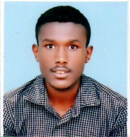

Temesgen Geta |
About Me |
Blog |
News |
Books |
Contact |
Hire Me |
About Me |
CONNECT WITH ME |
|
Hello friends! my name is Temesgen. I am a student, StudentI am a student at Addis Ababa Institute of Technology. |
 |

|
FOLLOW ME ON FACEBOOK
|
|
Technology, mechanical, chemical, civil and biomedical engineering.
I am software Kirkos voluntary association Head
I am the head of Kirkos voluntary association located in Debre Work. I have participated Member of ESSS
Ethiopia Space Science Society is incorporated in 1996. The main vision of this socity is Member of solvers club
I join this club in 2019. This club works to strengthen students creativity. I participated
This is my personal website and I tried to announce my participation and current status. |
Copyright © 2020 Temesgen Geta . All rights reserved. |